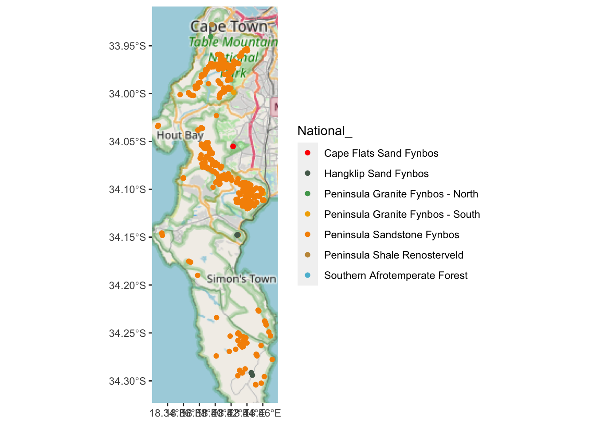

7 Vector GIS operations in R
7.1 Case study and demo datasets
Ok, for demonstrating some of the many GIS operations R can perform we will be using data from one of my favourite study areas, the Cape Peninsula.
The datasets we will use, some of their properties and where to source them are tabled below:
| Name | Data.model | Geometry.type | File.format | Data.source | URL |
|---|---|---|---|---|---|
| Localities | Vector | Point | iNaturalist | https://www.inaturalist.org/ | |
| Watercourses | Vector | Line | ESRI shapefile | City of Cape Town | https://odp-cctegis.opendata.arcgis.com/datasets/cctegis::open-watercourses/about |
| Vegetation Types (historical) | Vector | Polygon | ESRI shapefile | City of Cape Town | https://odp-cctegis.opendata.arcgis.com/datasets/cctegis::indigenous-vegetation-historic-extent/about |
| Vegetation Types (remnants) | Vector | Polygon | ESRI shapefile | City of Cape Town | https://odp-cctegis.opendata.arcgis.com/datasets/indigenous-vegetation-current-extent |
| Elevation | Raster | Raster | GeoTIFF | City of Cape Town | https://odp-cctegis.opendata.arcgis.com/datasets/digital-elevation-model-10m-grid-general-binary-ascii |
If you’d like to follow along and run the analyses that follow, please follow the links and download the datasets. If you don’t see the links, you need to reduce the font size by clicking the “A” in the taskbar. The elevation dataset is ~13MB as a .zip file, but will expand to ~130MB . I’ll also put a copy of all datasets on the Vula site for the course, which I understand is zero-data rated. There’s no need to download the iNaturalist data as we’ll download it directly from R.
For installing R and the required packages see section 1.2.
7.2 Reading and writing
sf has a one-size-fits-all approach in that most functions can be applied to most different data types (point, line, polygon, etc) or, in the case of reading and writing, file formats. To read data the function you want is st_read().
You’ll note that most of the sf functions begin with “st_” - this stands for “spatial and temporal” and is the same in some other GIS like PostGIS.
Let’s try to read in some data with st_read():
NOTE: if you’re trying any of the read/write code at home, you’ll need to set the file path to where you put the data and want the outputs on your local machine. You can also use
?setwdto simplify this. If you are on Windows, make sure to change the backslashes “" to either double backslashes or forward slashes”/“.
library(sf)
veg <- st_read("data/cape_peninsula/veg/Vegetation_Indigenous.shp")## Reading layer `Vegetation_Indigenous' from data source
## `/home/jasper/GIT/spatial-r/data/cape_peninsula/veg/Vegetation_Indigenous.shp'
## using driver `ESRI Shapefile'
## Simple feature collection with 1325 features and 5 fields
## Geometry type: POLYGON
## Dimension: XY
## Bounding box: xmin: -63972.95 ymin: -3803535 xmax: 430.8125 ymax: -3705149
## Projected CRS: WGS_1984_Transverse_MercatorThis has successfully read in the data and given us a summary of some of its properties. Note the projection (proj4string). This is Transverse Mercator Lo19 (i.e. centred on the 19 degree line of longitude), which has a unit in metres (see the bounding box coordinates). It’s a good projection for most calculations at this scale (and on this line of longitude*).
*If you’re using Transverse Mercator, always make sure it is set for your closest “odd” line of longitude (i.e. Lo19, Lo21, Lo23)!
Let’s have a closer look at the data:
class(veg)## [1] "sf" "data.frame"It is an object of two different “classes,” a data.frame, which is an R object class you should be familiar with, and class sf, which is the native class for the sf library.
The nice thing about being both classes is it means you can apply the functions built for either class, e.g.
head(veg)## Simple feature collection with 6 features and 5 fields
## Geometry type: POLYGON
## Dimension: XY
## Bounding box: xmin: -51324.95 ymin: -3732075 xmax: -35653.98 ymax: -3718136
## Projected CRS: WGS_1984_Transverse_Mercator
## AREA_HCTR PRMT_MTR National_
## 1 1807.5183616 24763.8073 Atlantis Sand Fynbos
## 2 2.1437754 609.5892 Atlantis Sand Fynbos
## 3 0.2134855 185.5566 Atlantis Sand Fynbos
## 4 2.8602421 652.1671 Atlantis Sand Fynbos
## 5 0.5468058 336.8006 Atlantis Sand Fynbos
## 6 0.4172046 259.7772 Atlantis Sand Fynbos
## Subtype Community
## 1 on marine-derived acid sands Need to Find Out
## 2 on marine-derived acid sands Need to Find Out
## 3 on marine-derived acid sands Need to Find Out
## 4 on marine-derived acid sands Need to Find Out
## 5 on marine-derived acid sands Need to Find Out
## 6 on marine-derived acid sands Need to Find Out
## geometry
## 1 POLYGON ((-48203.88 -372294...
## 2 POLYGON ((-36676.72 -371974...
## 3 POLYGON ((-35891.46 -371837...
## 4 POLYGON ((-35750.07 -371847...
## 5 POLYGON ((-35823.89 -371817...
## 6 POLYGON ((-35929.18 -371824...This is a commonly used function for looking at the first few rows of a dataframe. Note there are 5 attribute columns and a 6th geometry column. All sf objects have a geometry column. This is where it stores the geometry - i.e. the point, line, polygon etc - associated with each row of attribute data.
To write data with sf you use st_write(), like so:
st_write(veg, "data/cape_peninsula/veg/Vegetation_Indigenous_duplicate.shp")## Writing layer `Vegetation_Indigenous_duplicate' to data source
## `data/cape_peninsula/veg/Vegetation_Indigenous_duplicate.shp' using driver `ESRI Shapefile'
## Writing 1325 features with 5 fields and geometry type Polygon.file.exists("data/cape_peninsula/veg/Vegetation_Indigenous_duplicate.shp") # Just to confirm for you that the file exists## [1] TRUENote that the function recognised that I wanted to write out an ESRI shapefile from the .shp file extension I provided. You can set the file type using the driver = setting in st_write(). Try st_drivers() for the list of file types supported.
7.3 Basic plotting
As with other data types in R (and perhaps even more so with spatial data), you can really go to town with plotting. I’m only going to show you enough to be able to interrogate your data. Making it look pretty is a week-long course or more in its own right. Check out the “Making maps with R” chapter in Lovelace et al’s online book Geocomputation with R for a good start.
The easiest way to plot datasets in R is often a bad thing to do when working with spatial datasets!
plot(veg)
Fortunately, in this case the dataset isn’t too big, but often you’ll either be overwhelmed with plots or your computer will crash…
Why 5 plots and not one? This is because sf wants to plot the properties of each attribute in the attribute table. Fortunately, there were only 5, but there could have been hundreds! You can select the one you want with indexing like so:
plot(veg[3])
These are the National Vegetation Types for the City of Cape Town municipality.
You’ll note that we’re using the base R graphics functions. I mentioned before that sf integrates well with the Tidyverse, so this could also be plotted like so:
library(tidyverse) #calls ggplot2 and other Tidyverse packages together
ggplot() +
geom_sf(data=veg, aes(fill = `National_`))
That’s better for the legend, but now we’ve squashed the map. Let’s narrow in on the Cape Peninsula for convenience.
7.4 Cropping
Here we’ll apply the function st_crop(). To use the function you need an object to crop, and an extent or bounding box to crop to. sf is clever, and you can set the extent by giving it another object who’s extent you’d like to match (check the bounding box given when we read in the data earlier).
We don’t have a second object in this case, so we have to provide a “numeric vector with named elements xmin, ymin, xmax and ymax,” like so:
#Make a vector of coordinates in metres according to TM Lo19
ext <- c(-66642.18, -3809853.29, -44412.18, -3750723.29)
ext## [1] -66642.18 -3809853.29 -44412.18 -3750723.29#Give the vector names
names(ext) <- c("xmin", "ymin", "xmax", "ymax")
ext## xmin ymin xmax ymax
## -66642.18 -3809853.29 -44412.18 -3750723.29Now we can feed that into st_crop
veg <- st_crop(veg, ext) #Note that I'm overwriting the old data object
ggplot() + geom_sf(data=veg, aes(fill = `National_`))
Better?
But what about the silly splits like Peninsula Granite Fynbos - North/South and Cape Flats Dune Strandveld - West Coast/False Bay.
Which ones do I mean?
7.5 Select and subset by attribute
Let’s select them from the attribute table and plot them.
#Make a vector of the veg types we want
split_veg <- c("Peninsula Granite Fynbos - North",
"Peninsula Granite Fynbos - South",
"Cape Flats Dune Strandveld - West Coast",
"Cape Flats Dune Strandveld - False Bay")
#Use base R indexing to select attributes
vegsub <- veg[which(veg$National_ %in% split_veg),]
#Plot
ggplot() + geom_sf(data=vegsub, aes(fill = `National_`))
Or tidyverse…
#Using tidyverse piping to filter and plot
veg %>%
filter(National_ %in% split_veg) %>%
ggplot() +
geom_sf(aes(fill = `National_`))
#The advantage being that you don't have to make the intermediate "vegsub" objectOk. What if we decided we don’t want them split?
7.6 Combine classes and dissolve by attribute
We can just rename them in appropriate column in the attribute table…
vegsub$National_ <- str_replace_all(vegsub$National_, c("Peninsula Granite Fynbos - North" = "Peninsula Granite Fynbos",
"Peninsula Granite Fynbos - South" = "Peninsula Granite Fynbos",
"Cape Flats Dune Strandveld - West Coast" = "Cape Flats Dune Strandveld",
"Cape Flats Dune Strandveld - False Bay" = "Cape Flats Dune Strandveld"))
ggplot() + geom_sf(data=vegsub, aes(fill = `National_`))
Nice, but from the polygon boundaries we see that there are a number of adjacent polygons (i.e. they have shared boundaries) that are of the same veg type. We can “dissolve” and plot these boundaries like so:
vegsub %>% group_by(National_) %>%
summarize() %>%
ggplot() + geom_sf(aes(fill = National_))
Ok… I think we’ve flogged that horse as far as it’ll go for now. Let’s bring in another dataset. How about points?
7.7 Calling iNaturalist locality (point) data from R
A very cool feature of iNaturalist is that the team at rOpenSci have built a great R package for interfacing with it directly, called rinat!
Let’s get all the records we can for the King Protea (Protea cynaroides).
library(rinat)
#Call the data directly from iNat
pc <- get_inat_obs(taxon_name = "Protea cynaroides",
bounds = c(-35, 18, -33.5, 18.5),
maxresults = 1000)
#Filter returned observations by a range of attribute criteria
pc <- pc %>% filter(positional_accuracy<46 &
latitude<0 &
!is.na(latitude) &
captive_cultivated == "false" &
quality_grade == "research")
class(pc)## [1] "data.frame"Ok, so this is a dataframe with lat/long data, but it isn’t registered as an object with spatial attributes (i.e. geometries).
7.8 Converting a dataframe into a spatial object
To make it an object of class(sf) we use the function st_as_sf().
#Make the dataframe a spatial object of class = "sf"
pc <- st_as_sf(pc, coords = c("longitude", "latitude"), crs = 4326) #Note that I had to define the CRS (as Geographic WGS84)!!!
#What class is it?
class(pc)## [1] "sf" "data.frame"#Note the new "geometry" column
names(pc)## [1] "scientific_name"
## [2] "datetime"
## [3] "description"
## [4] "place_guess"
## [5] "tag_list"
## [6] "common_name"
## [7] "url"
## [8] "image_url"
## [9] "user_login"
## [10] "id"
## [11] "species_guess"
## [12] "iconic_taxon_name"
## [13] "taxon_id"
## [14] "num_identification_agreements"
## [15] "num_identification_disagreements"
## [16] "observed_on_string"
## [17] "observed_on"
## [18] "time_observed_at"
## [19] "time_zone"
## [20] "positional_accuracy"
## [21] "public_positional_accuracy"
## [22] "geoprivacy"
## [23] "taxon_geoprivacy"
## [24] "coordinates_obscured"
## [25] "positioning_method"
## [26] "positioning_device"
## [27] "user_id"
## [28] "created_at"
## [29] "updated_at"
## [30] "quality_grade"
## [31] "license"
## [32] "sound_url"
## [33] "oauth_application_id"
## [34] "captive_cultivated"
## [35] "geometry"#Plot
ggplot() + geom_sf(data=pc)
Great! We got lots of points, but without a base layer its very difficult to tell where exactly these are?
7.9 Adding basemaps to plots
There are lots of ways to make the basemap from data objects etc that we can plot our points over, but an easy way is to pull in tiles from Open Street Maps and plot our points on those.
library(rosm)
library(ggspatial)
ggplot() +
annotation_map_tile(type = "osm", progress = "none") +
geom_sf(data=pc)
Note that there are quite a few base layer/tile options that can be set with type = "". Try rosm::osm.types() to see them all.
This is better than nothing, but the scale of the map is too small to really see where the plants actually are. It would be much easier if we could look at the data interactively?
7.10 Interactive maps with leaflet
We can generate interactive maps by calling the leaflet mapserver using wrapper functions in the leaflet R package written for this purpose.
NOTE: If you can’t get leaflet to work it is probably a CRS problem. Your data need to be in Geographic or Web Mercator
library(leaflet)
library(htmltools)
leaflet() %>%
# Add default OpenStreetMap map tiles
addTiles(group = "Default") %>%
# Add our points
addCircleMarkers(data = pc,
group = "Protea cynaroides",
radius = 3,
color = "green") Much better!
Strange, but even though we filtered our iNaturalist records for captive_cultivated == "false" we still have a number of observations that appear to be in people’s gardens.
Let this serve as a warning to be wary of all data! Always do “common-sense-checks” on your data and the outputs of your analyses!!!
7.11 Reprojecting
One way to drastically reduce the number of cultivated records is to overlay the localities (points) with the remaining extent of the vegetation types (i.e. anything that is not in natural vegtation is likely to be cultivated). Let’s try that…
#Get the remnants layer
vegr <- st_read("data/cape_peninsula/veg/Vegetation_Indigenous_Remnants.shp")## Reading layer `Vegetation_Indigenous_Remnants' from data source
## `/home/jasper/GIT/spatial-r/data/cape_peninsula/veg/Vegetation_Indigenous_Remnants.shp'
## using driver `ESRI Shapefile'
## Simple feature collection with 3428 features and 7 fields
## Geometry type: POLYGON
## Dimension: XY
## Bounding box: xmin: -63951.23 ymin: -3803532 xmax: 420.7595 ymax: -3705506
## Projected CRS: WGS_1984_Transverse_Mercatorhmm <- st_intersection(pc, vegr)## Error in geos_op2_geom("intersection", x, y, ...): st_crs(x) == st_crs(y) is not TRUEOops! The Coordinate Reference Systems are different! We will need to reproject one of the two datasets…
Let’s see what CRS are currently set:
st_crs(pc)## Coordinate Reference System:
## User input: EPSG:4326
## wkt:
## GEOGCRS["WGS 84",
## ENSEMBLE["World Geodetic System 1984 ensemble",
## MEMBER["World Geodetic System 1984 (Transit)"],
## MEMBER["World Geodetic System 1984 (G730)"],
## MEMBER["World Geodetic System 1984 (G873)"],
## MEMBER["World Geodetic System 1984 (G1150)"],
## MEMBER["World Geodetic System 1984 (G1674)"],
## MEMBER["World Geodetic System 1984 (G1762)"],
## MEMBER["World Geodetic System 1984 (G2139)"],
## ELLIPSOID["WGS 84",6378137,298.257223563,
## LENGTHUNIT["metre",1]],
## ENSEMBLEACCURACY[2.0]],
## PRIMEM["Greenwich",0,
## ANGLEUNIT["degree",0.0174532925199433]],
## CS[ellipsoidal,2],
## AXIS["geodetic latitude (Lat)",north,
## ORDER[1],
## ANGLEUNIT["degree",0.0174532925199433]],
## AXIS["geodetic longitude (Lon)",east,
## ORDER[2],
## ANGLEUNIT["degree",0.0174532925199433]],
## USAGE[
## SCOPE["Horizontal component of 3D system."],
## AREA["World."],
## BBOX[-90,-180,90,180]],
## ID["EPSG",4326]]So the points are Geographic. Besides having set it ourselves earlier, we know this because it indicates that the unit is degrees.
st_crs(vegr)## Coordinate Reference System:
## User input: WGS_1984_Transverse_Mercator
## wkt:
## PROJCRS["WGS_1984_Transverse_Mercator",
## BASEGEOGCRS["WGS 84",
## DATUM["Hartebeesthoek94",
## ELLIPSOID["WGS 84",6378137,298.257223563,
## LENGTHUNIT["metre",1]],
## ID["EPSG",6148]],
## PRIMEM["Greenwich",0,
## ANGLEUNIT["Degree",0.0174532925199433]]],
## CONVERSION["unnamed",
## METHOD["Transverse Mercator",
## ID["EPSG",9807]],
## PARAMETER["Latitude of natural origin",0,
## ANGLEUNIT["Degree",0.0174532925199433],
## ID["EPSG",8801]],
## PARAMETER["Longitude of natural origin",19,
## ANGLEUNIT["Degree",0.0174532925199433],
## ID["EPSG",8802]],
## PARAMETER["Scale factor at natural origin",1,
## SCALEUNIT["unity",1],
## ID["EPSG",8805]],
## PARAMETER["False easting",0,
## LENGTHUNIT["metre",1],
## ID["EPSG",8806]],
## PARAMETER["False northing",0,
## LENGTHUNIT["metre",1],
## ID["EPSG",8807]]],
## CS[Cartesian,2],
## AXIS["(E)",east,
## ORDER[1],
## LENGTHUNIT["metre",1,
## ID["EPSG",9001]]],
## AXIS["(N)",north,
## ORDER[2],
## LENGTHUNIT["metre",1,
## ID["EPSG",9001]]]]The vegetation types are in Transverse Mercator Lo19, because it says “Transverse Mercator” and the “Central_Meridian” is set to 19.
In this case, either CRS is fine for our purposes, but let’s stick with Transverse Mercator Lo19, because it’ll be useful later. For this we need to reproject the veg layer like so:
pc <- st_transform(pc, st_crs(vegr)) Note that I fed it the CRS from vegr. This guarantees that they’ll be the same, even if we misidentified what the actual CRS is…
7.12 Intersecting points and polygons
…and now we can try to intersect the points and polygons again…
First lets see how many rows and columns the point data before the intersection:
#call the dimensions of pc
dim(pc) ## [1] 634 35And after the intersection?
pc <- st_intersection(pc, vegr)
dim(pc)## [1] 606 42Less rows, but more columns! Two things have happened:
- The attribute data from the polygons in
vegrintersected by the points inpchave been added to the attribute table inpc! - All points that do not intersect the polygons in
vegrwere dropped (i.e. those that were recorded outside the remaining extent of natural vegetation).
Let’s have a look
ggplot() +
annotation_map_tile(type = "osm", progress = "none") +
geom_sf(data=pc)Yup, the localities in suburbia are gone… The map is a bit bland though. How about we use our “new information” about which vegetation types the observations occur in to colour or label the points on the map?
7.13 Colour or label points
First, let’s add colour:
library(wesanderson)
pal <- wes_palette("Darjeeling1", 7, type = "continuous")
ggplot() +
annotation_map_tile(type = "osm", progress = "none") +
geom_sf(data=pc, aes(col = National_)) +
scale_colour_manual(values = pal)
Looks like almost all of them are in Peninsula Sandstone Fynbos…
pc %>% group_by(National_) %>% summarise(n())## Simple feature collection with 5 features and 2 fields
## Geometry type: GEOMETRY
## Dimension: XY
## Bounding box: xmin: -61567.21 ymin: -3797115 xmax: -48812.79 ymax: -3755803
## Projected CRS: WGS_1984_Transverse_Mercator
## # A tibble: 5 × 3
## National_ `n()` geometry
## <chr> <int> <GEOMETRY [m]>
## 1 Hangklip Sand Fynbos 2 MULTIPOINT ((-52770.86 -…
## 2 Peninsula Granite Fynbos - So… 6 MULTIPOINT ((-56255.7 -3…
## 3 Peninsula Sandstone Fynbos 595 MULTIPOINT ((-61567.21 -…
## 4 Peninsula Shale Renosterveld 1 POINT (-55866.09 -375580…
## 5 Southern Afrotemperate Forest 2 MULTIPOINT ((-53662.7 -3…Yup! Note the numbers in column n(). But I can’t see where the Hangklip Sand Fynbos record is, so let’s label that one with text using geom_sf_label().
hsf <- pc %>% filter(National_ == "Hangklip Sand Fynbos") #find the locality
ggplot() +
annotation_map_tile(type = "osm", progress = "none") +
geom_sf(data=pc, aes(col = National_)) +
scale_colour_manual(values = pal) +
geom_sf_label(data=hsf, aes(label = "Here"))
Aha!
Note that you can specify that the label = setting points to a column in your dataset with names if you have lots of labels to add.
7.14 Buffering
One issue here may be that all localities should be in Peninsula Sandstone Fynbos, but the vegetation type boundaries are wrong. After all, the transition or ecotone between two vegetation types is usually diffuse rather than a clear boundary, not to mention that the data may have been digitized at a very small scale, compromizing precision and accuracy. One way to check this is to buffer the points using st_buffer to see if they are within some distance (say 250m) of the boundary with Peninsula Sandstone Fynbos.
#Find the localities that are not in Peninsula Sandstone Fynbos and add a 250m buffer
npsf <- pc %>%
filter(National_ != "Peninsula Sandstone Fynbos") %>%
st_buffer(dist = 250)
#NOTE that st_buffer() makes them polygons, because they now have area!
npsf$geometry[1] #The first geometry in npsf## Geometry set for 1 feature
## Geometry type: POLYGON
## Dimension: XY
## Bounding box: xmin: -53912.7 ymin: -3762372 xmax: -53412.7 ymax: -3761872
## Projected CRS: WGS_1984_Transverse_Mercator## POLYGON ((-53412.7 -3762122, -53413.05 -3762136...#Get the number of unique iNaturalist record numbers
length(unique(npsf$id)) ## [1] 11#Intersect new polygons with veg remnants and filter for those that overlap Peninsula Sandstone Fynbos only
npsf <- st_intersection(npsf, vegr) %>% filter(National_.1 == "Peninsula Sandstone Fynbos")
#Get the number of unique iNaturalist record numbers that overlap PSF
length(unique(npsf$id))## [1] 6So 7 of 16 records are suspiciously close to Peninsula Sandstone Fynbos…
7.15 Within distance and intersect
Perhaps a more interesting use of buffering is to see if a species is within a certain distance of a particular habitat etc. For example, we could ask if a species is associated with riparian zones by buffering either the localities (points) or rivers (lines) and then doing an intersection.
But of course there are many ways to skin a cat, and it turns out buffering and intersecting may not be the most efficient here. If we don’t want to pull the attribute data from one dataset to the other we can just use st_intersects() to see if they overlap at all. We can even take it one step further, because sf has the function st_is_within_distance(), which is similar to applying st_buffer() and st_intersects() in one go.
Here we’ll use Brabejum stellatifolium (a riparian tree) as our focal species and the watercourse layer from the City of Cape Town.
#Get the watercourse data
water <- st_read("data/cape_peninsula/Open_Watercourses.geojson")## Reading layer `Open_Watercourses' from data source
## `/home/jasper/GIT/spatial-r/data/cape_peninsula/Open_Watercourses.geojson'
## using driver `GeoJSON'
## Simple feature collection with 10848 features and 11 fields
## Geometry type: MULTILINESTRING
## Dimension: XY
## Bounding box: xmin: 18.31249 ymin: -34.28774 xmax: 18.99045 ymax: -33.47256
## Geodetic CRS: WGS 84#Check it's CRS
st_crs(water)## Coordinate Reference System:
## User input: WGS 84
## wkt:
## GEOGCRS["WGS 84",
## DATUM["World Geodetic System 1984",
## ELLIPSOID["WGS 84",6378137,298.257223563,
## LENGTHUNIT["metre",1]]],
## PRIMEM["Greenwich",0,
## ANGLEUNIT["degree",0.0174532925199433]],
## CS[ellipsoidal,2],
## AXIS["geodetic latitude (Lat)",north,
## ORDER[1],
## ANGLEUNIT["degree",0.0174532925199433]],
## AXIS["geodetic longitude (Lon)",east,
## ORDER[2],
## ANGLEUNIT["degree",0.0174532925199433]],
## ID["EPSG",4326]]#Call the data directly from iNat
bs <- get_inat_obs(taxon_name = "Brabejum stellatifolium",
bounds = c(-35, 18, -33.5, 18.5),
maxresults = 1000)
#Filter returned observations by a range of attribute criteria
bs <- bs %>% filter(positional_accuracy<46 &
latitude<0 &
!is.na(latitude) &
captive_cultivated == "false" &
quality_grade == "research")
#Make the dataframe a spatial object of class = "sf"
bs <- st_as_sf(bs, coords = c("longitude", "latitude"), crs = 4326) #Note that I had to define the CRS (as Geographic WGS84)!!!Let’s see what we’ve got…
#Crop the water courses to the extent of the locality data
water <- st_crop(water, bs)
#Plot
ggplot() +
annotation_map_tile(type = "osm", progress = "none") +
geom_sf(data = water, colour = "blue") +
geom_sf(data=bs)
Hard to tell, but they could all be on rivers?
Let’s try st_intersects() without any buffering first to see if they overlap at all.
st_intersects(bs, water) %>% unlist()## integer(0)Oops! We forgot to project our data!
bs <- st_transform(bs, st_crs(vegr))
water <- st_transform(water, st_crs(vegr))
st_intersects(bs, water) %>% unlist()## integer(0)So none of them intersect, but this is not surprising, because lines and points in GIS do not have area, so they can’t really intersect unless you buffer them… Let’s try st_is_within_distance() and set it for 20 metres.
Note that I add unlist() %>% unique() because the function returns a list and will return the same feature (line/river) multiple times - once for every point (tree) it is within 20m of.
st_is_within_distance(bs, water, 20) %>% unlist() %>% unique()## [1] 346 327 328 330 332 264 351 347 349 885 179 294 285 333 101
## [16] 224 280 281 282 615 19So it’s given us the list of lines (rivers) within 20m of our points, but that doesn’t tell us how many (or what proportion) of our points are within 20m of a river. Let’s apply the function again, swapping the layers around:
st_is_within_distance(water, bs, 20) %>% unlist() %>% unique()## [1] 159 144 160 170 83 103 112 17 120 97 98 13 37 68 69
## [16] 137 138 23 33 36 53 87 89 152 16 136 122 9 10 11
## [31] 24 31 63 84 85 113 32 86 18 81 80 82 93 148So only ~30 of the trees are within 20m of the rivers. What about 50m?
st_is_within_distance(water, bs, 100) %>% unlist() %>% unique()## [1] 14 101 159 144 160 170 27 39 57 125 151 83 103 112
## [15] 21 28 17 35 66 88 104 106 107 108 116 120 124 132
## [29] 135 161 115 139 162 105 133 134 97 98 65 47 143 90
## [43] 5 6 13 30 36 37 41 43 44 48 53 68 69 75
## [57] 76 77 78 79 95 100 110 121 127 129 130 131 137 138
## [71] 152 154 165 12 22 23 33 46 55 56 70 71 72 73
## [85] 74 87 89 102 16 136 122 4 9 10 11 24 31 32
## [99] 63 84 85 113 123 166 86 18 26 81 163 1 2 80
## [113] 82 93 148 99So about 90…
It’s at this point that it’s worth thinking about the scale, precision and accuracy of both the species localities and the watercourse data before drawing any strong conclusions!!!